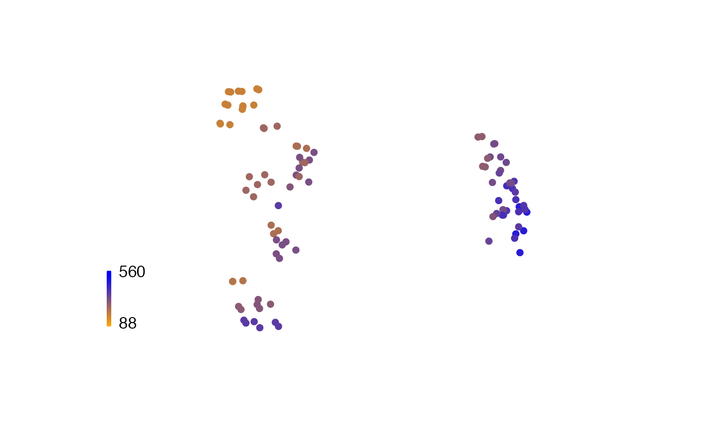
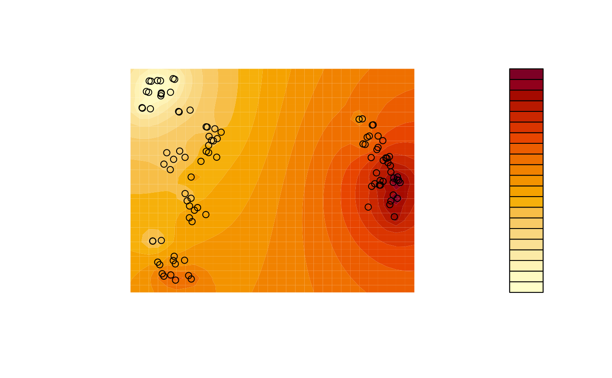

Analysing landscapes of phylogenetic trees
Martin R. Smith
Source:vignettes/landscapes.Rmd
landscapes.RmdLandscapes of trees are mappings of tree space that are contoured according to some optimality criterion – often, but not necessarily, a tree’s score under a phylogenetic reconstruction technique (Bastert et al., 2002). Detecting “islands” or “terraces” of trees can illuminate the nature of the space of optimal trees and thus inform tree search strategy (Maddison, 1991; Sanderson et al., 2011).
For simplicity (and to avoid scoring trees against a dataset), this example uses a tree’s balance (measured using the total cophenetic index) as its score (Mir et al., 2013). We assume that mappings have already been shown to be adequate (Smith, 2022).
A landscape is most simply visualized by colouring each tree according to its score:
# Load required libraries
library("TreeTools", quietly = TRUE)
library("TreeDist")
# Generate a set of trees
trees <- as.phylo(as.TreeNumber(BalancedTree(16)) + 0:100 - 15, 16)
# Create a 2D mapping
distances <- ClusteringInfoDist(trees)
mapping <- cmdscale(distances, 2)
# Score trees according to their balance
scores <- TotalCopheneticIndex(trees)
# Normalize scores
scoreMax <- TCIContext(trees[[1]])[["maximum"]]
scoreMin <- TCIContext(trees[[1]])[["minimum"]]
scores <- scores - scoreMin
scores <- scores / (scoreMax - scoreMin)
# Generate colour palette
col <- colorRamp(c("orange", "blue"))(scores)
rgbCol <- rgb(col, maxColorValue = 255)
# Plot trees, coloured by their score
plot(
mapping,
asp = 1, # Preserve aspect ratio - do not distort distances
ann = FALSE, axes = FALSE, # Don't label axes: dimensions are meaningless
col = rgbCol, # Colour trees by score
pch = 16 # Plotting character: Filled circle
)
# Add a legend
PlotTools::SpectrumLegend(
"left",
title = "Tree balance",
palette = rgb(colorRamp(c("orange", "blue"))(0:100 / 100) / 255),
legend = floor(seq(scoreMax, scoreMin, length.out = 6)),
bty = "n"
)
A more sophisticated output can be produced using contours, interpolating between adjacent trees. This example uses a simple inverse distance weighting function for interpolation; more sophisticated techniques such as kriging or (in continuous tree spaces) the use of geodesics (Khodaei et al., 2022) can produce even better results.
# Use an inverse distance weighting to interpolate between measured points
Predict <- function (x, y) {
Distance <- function (a, b) {
apply(a, 2, function (pt) sqrt(colSums((pt - b) ^ 2)))
}
predXY <- rbind(x, y)
dists <- Distance(t(mapping), predXY)
invDist <- 1 / dists
weightings <- invDist / rowSums(invDist)
# Return:
colSums(scores * t(weightings))
}
# Generate grid for contour plot
resolution <- 32
xLim <- range(mapping[, 1]) * 1.1
yLim <- range(mapping[, 2]) * 1.11
x <- seq(xLim[1], xLim[2], length.out = resolution)
y <- seq(yLim[1], yLim[2], length.out = resolution)
z <- outer(x, y, Predict) # Predicted values for each grid square
# Plot
filled.contour(
x, y, z,
asp = 1, # Preserve aspect ratio - do not distort distances
ann = FALSE, axes = FALSE, # Don't label axes: dimensions are meaningless
plot.axes = {points(mapping, xpd = NA)} # Use filled.contour coordinates
)
A variety of R add-on packages facilitate three-dimensional plots.
if (requireNamespace("plotly", quietly = TRUE)) {
plotly::add_surface(plotly::plot_ly(x = x, y = y, z = z))
} else {
print("Run `install.packages('plotly')` to view this output")
}(Use the mouse to reorient)